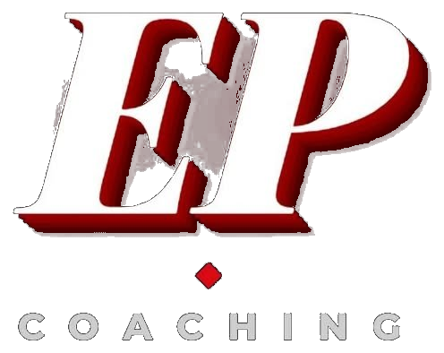
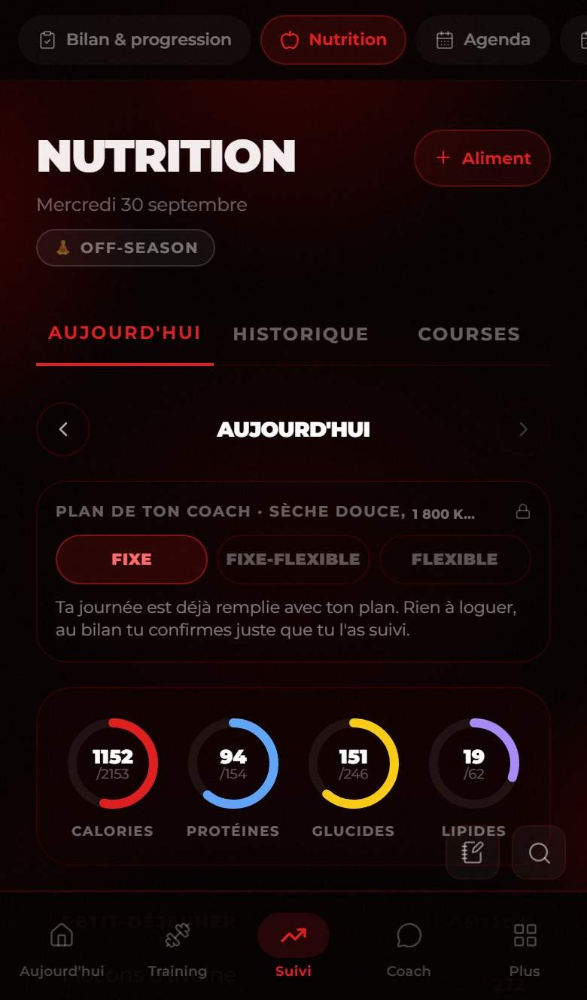
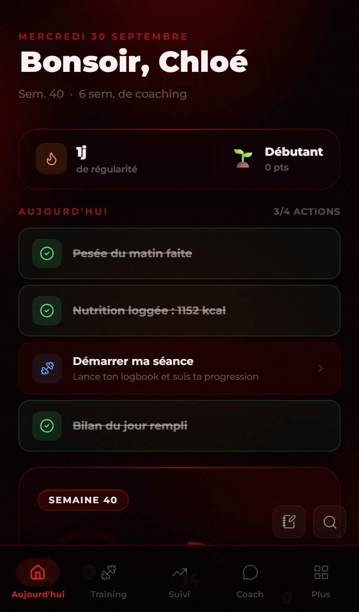
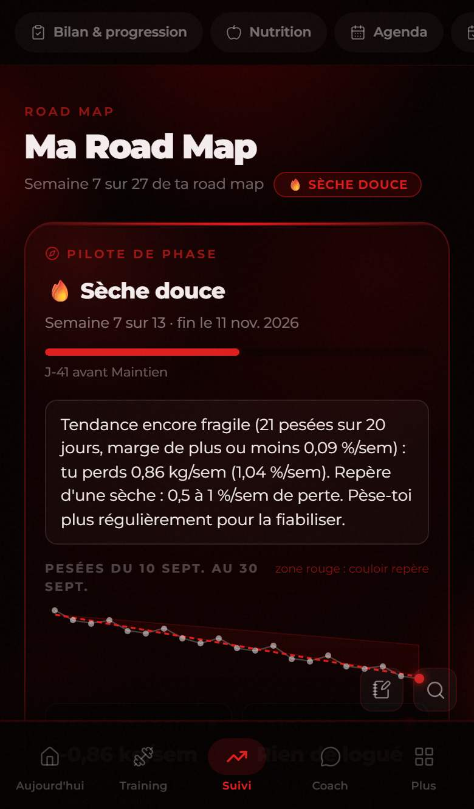
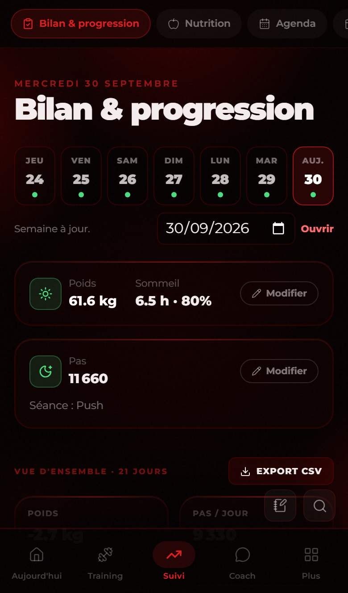
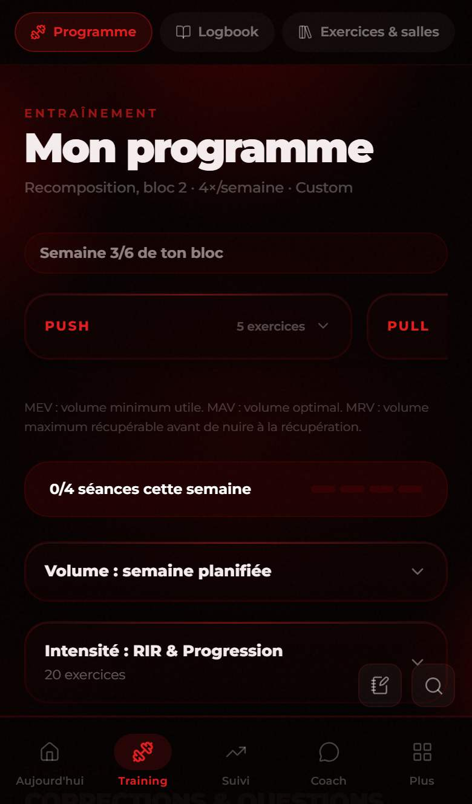

Il faut des heures de cardio pour perdre du ventre
La musculation dessine tes formes. Le cardio aide, il ne fait pas tout.

Même si tu pars de zéro. Un programme, une diète et une roadmap faits pour toi, un check-in chaque semaine, et un coach qui te répond à toute heure.
Audit 30 min, gratuit, en tête-à-tête Appli gratuite 60 jours Pour les débutantes



◆ À regarder avant de réserver
5 minutes. Les 4 piliers pour perdre du gras quand on débute, sans y passer sa vie.
Audit de 30 minutes, gratuit, avec Emmanuel. Dans le pire des cas, tu repars avec un plan clair.
◆ C'est pour toi si
Et à chaque fois, une semaine chargée a tout arrêté. Le problème n'est pas ta motivation : c'est un plan qui ne tenait pas dans ta vraie vie.
◆ Ce qu'on t'a fait croire
Il faut des heures de cardio pour perdre du ventre
La musculation dessine tes formes. Le cardio aide, il ne fait pas tout.
La musculation va me rendre trop musclée
Elle te donne des fessiers, des épaules, une silhouette plus équilibrée.
Il faut manger très peu pour maigrir
Tu manges à ta faim, avec des protéines à chaque repas. C'est ce qui tient.
◆ La méthode
Pas un défi de 30 jours. Un changement qui reste, découpé en étapes que tu vois passer dans ta roadmap.
Tes séances, tes repas, ton rythme. Tout tient dans ta semaine.
Tu sais quoi faire, tu charges un peu plus chaque semaine.
Le ventre, les fessiers, la silhouette que tu veux.
Tu n'as plus besoin de deviner. Et ça reste.
◆ Le coaching EP
On commence par un audit de 30 minutes, gratuit, en tête-à-tête. Tu repars avec un plan clair, que tu travailles avec nous ou non.
◆ Visite guidée
Ce que ça change, du réveil au coucher. Écrans réels, comptes de démonstration.
En savoir plus sur Bilan du jour

En savoir plus sur Entraînement


◆ Qui est derrière
Le plan parfait que tu abandonnes ne vaut rien. Le plan simple que tu tiens change tout.
Moi, c'est Emmanuel. J'ai 17 ans, je suis né à Girardota, en Colombie, je vis à Annecy et je pars bientôt à Paris. Je prépare la WNBF Classic 2027. J'ai créé EP Coaching et son appli pour aider les débutantes à perdre du gras et à atteindre leurs objectifs en 6 mois.
Suis-moi au quotidien, conseils et coulisses :
Tu es coach ? L'appli suit aussi tes clients. Découvrir l'espace coach
◆ FAQ
EP Coaching, c'est une appli de coaching et un accompagnement humain. L'appli sert à la fois aux personnes qui veulent progresser en musculation et en nutrition, et aux coachs qui veulent suivre leurs clients et faire grandir leur activité. Le tout a été fondé par Santamaria Sanchéz.
Oui, l'inscription et le suivi en autonomie sont gratuits, sans carte bancaire. L'accompagnement par un coach et l'espace coach sont des offres payantes.
Non. Le tracker part de ton plan : un repas mangé comme prévu se valide en un geste. Peser reste utile au début pour apprendre les portions.
Oui. Tes données de suivi ne sont visibles que par toi, et par ton coach si tu es accompagné. Tes photos et tes notes sont stockées dans des espaces privés.
Pas besoin : EP Coaching s'installe directement depuis ton navigateur sur ton écran d'accueil (Safari sur iPhone, Chrome sur Android).
Audit stratégique avec Emmanuel : 30 minutes, gratuit, en tête-à-tête. Tu repars avec un plan clair.